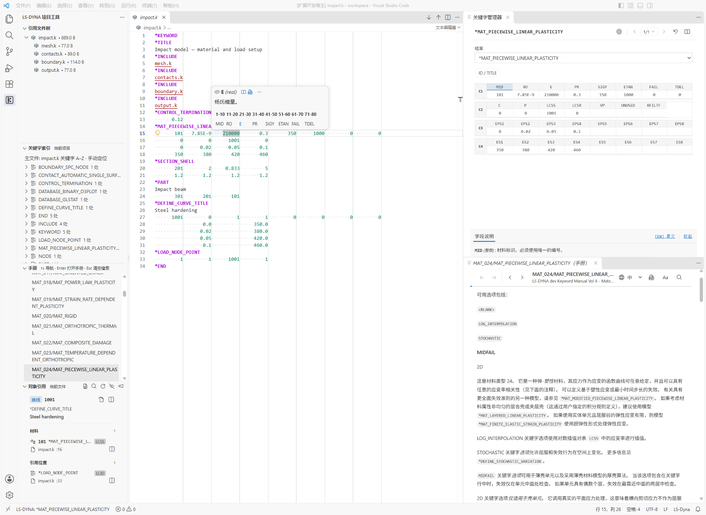

按字段编辑
直接按字段修改，或在关键字管理器中编辑卡片，再应用回 K 文件。
- 字段选中与替换Tab / Shift+Tab 切换字段，选中后直接输入新值
- 字段标尺与网格对照字段位置和列宽，查看卡片中的参数排列
- 卡片表单编辑在管理器中查看字段说明、修改数值，点击应用写回文件
面向 LS-DYNA 的开源免费 VS Code 扩展，支持本地离线使用。

直接按字段修改，或在关键字管理器中编辑卡片，再应用回 K 文件。
无需在数千页 PDF 中反复翻找。从当前关键字打开对应章节，参数定义、公式与中英对照就在代码旁。
从文件层级、关键字索引或对象引用出发，找到需要修改的卡片。
如果 DynaSense 对你有帮助，欢迎点个 Star。
☆ Star on GitHub ↗大文件提示：受 VS Code 文档同步限制，单个 K 文件超过约 50 MB 时，普通编辑器内的补全、字段帮助等辅助功能可能不可用。